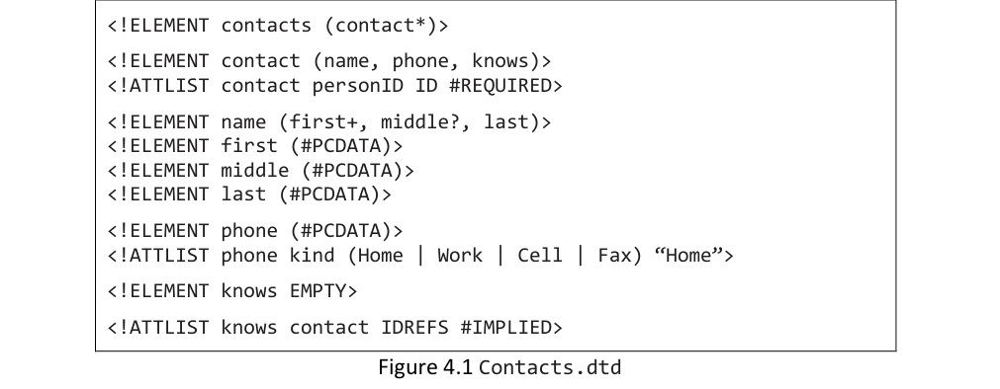
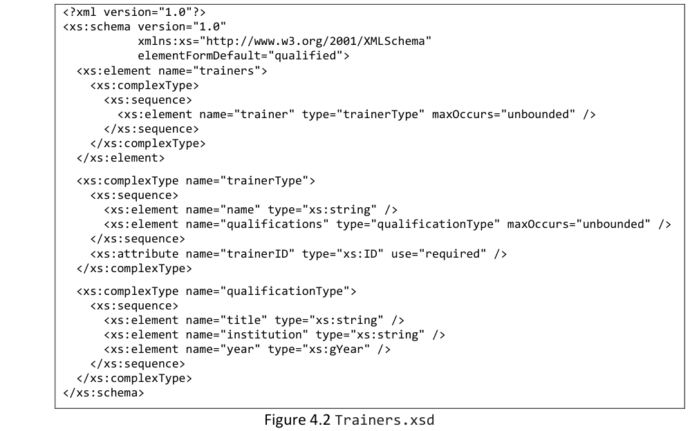

GET READY • YOUR TOOLKITEverything you need
03 · Visual reference library
Explore XML, DTD, XSD and XSLT with diagrams, examples and original appendix pages.
Open reference library ↗Each mission has its own practice studio below.
Download individual starter files
Why this matters
System A
Produces XML data
DTD / XSD
Defines the contract
System B
Receives validated data
Integrative programming connects applications. A shared contract helps both applications agree on structure, required fields and, with XSD, data types.
Set up your workspace
NetBeans path
- Create or open a PHP project. Extract Starter and copy the files into separate Q1–Q7 folders.
- New File → XML → XML Document (Well-formed Document), DTD Entity or XML Schema (empty).
- Save the XML and its contract in the same folder. Add the appropriate association shown below.
- Right-click the XML editor → Check XML for syntax; Validate XML for grammar validation. If unavailable, check that XML support is installed or use the alternative editor.
VS Code path
- Extract Starter. Open VS Code → File → Open Folder and select your practical workspace.
- Open Extensions (Ctrl+Shift+X), search for XML by Red Hat (redhat.vscode-xml), and install it. Extension page.
- In Explorer, create Q1–Q7 folders. Create files with .xml, .dtd or .xsd extensions and use the associations below.
- Save the files. Open the XML file and view Problems (Ctrl+Shift+M). The extension checks the associated grammar. Check that XML schema validation is enabled if diagnostics are absent.
- Introduce an intentional violation, save and confirm a diagnostic appears; restore and verify it disappears.
XML extension validation documentationChoose either editor. Both paths have the same learning outcomes and submission requirements.
<!DOCTYPE catalog SYSTEM "Books.dtd">
<catalog xmlns:xsi="http://www.w3.org/2001/XMLSchema-instance"
xsi:noNamespaceSchemaLocation="Books.xsd"> ... </catalog>
These are alternative linking examples. For XSD validation use a separate copy without the DTD declaration.
Visual cheat sheet
XML<item id="A1">Tea</item>
item = element; id = attribute; Tea = text.
DTD<!ELEMENT item (#PCDATA)>
Declares allowed text and structure.
XSD<xs:element name="item" type="xs:string"/>
Declares structure and types (example without attribute).
Occurrence translator
? → 0..1
minOccurs=0, maxOccurs=1
* → 0..many
0, unbounded
+ → 1..many
1, unbounded
No symbol → exactly 1
1, 1
DTD comma = ordered sequence; | = choice. XSD sequence = ordered; choice = alternatives; all = any order (XSD 1.0 children at most once). ID is unique; IDREFS references existing IDs. #IMPLIED means optional; a literal default supplies a value when omitted.
Two gates
XML syntax → well-formed? → contract rules → valid?
One root, matching case-sensitive tags, correct nesting and quoted attributes are syntax rules. A well-formed document can still violate a DTD or XSD.
MISSION 1 • Q1 • 20 minBuild a book catalogue
DTD · Explore → Predict → Build → Validate
catalog → book → title / author(s) / publisher / ISBN choice
Explore related appendix concepts ↗
Your task
Design an external DTD and a matching XML document. Each book needs a title, one or more authors, publisher and either ISBN10 or ISBN13. Use the starter Books files. Choose element names consistently.
Open syntax hint
Use a sequence, repeated children and a nested choice. Each named element needs its own declaration.
<!ELEMENT playlist (song+)>
<!ELEMENT song (title, artist+, (mp3|wav))>
<!ELEMENT title (#PCDATA)>
<!ELEMENT artist (#PCDATA)>
<!ELEMENT mp3 (#PCDATA)>
<!ELEMENT wav (#PCDATA)>
TRY IT · MISSION 1Your practice studio
Start with this working example, change the rules and test your prediction. Then use your own files in the selected editor.
Open this mission studio in a new tab ↗ Break it to learn it
Create two books, one with each ISBN alternative. Try removing the publisher, then restore it. Validate both versions.
Quick check
Which operator expresses exactly one of two alternatives?
MISSION 2 • Q2 • 20 minDecode the contacts rulebook
DTD · Explore → Predict → Build → Validate
contacts → contact → name / phone / knows
Original reference · Figure 4.1 — Contacts.dtd (original)

Practical 4 XML, page 1. Click the figure to enlarge.
View full original page ↗Explore related appendix concepts ↗
Your task
Read Contacts.dtd (Figure 4.1). Explain every declaration in your own words. Build Contacts.xml with different combinations: multiple first names, optional middle name, all four phone kinds and a default kind, knows with and without references. Use unique IDs and existing reference targets.
Open syntax hint
For each declaration explain its order, occurrence, type and default. Here is a different example with a valid reference to an existing ID.
<!ELEMENT members (member*)>
<!ELEMENT member (name, link)>
<!ATTLIST member code ID #REQUIRED>
<!ELEMENT name (#PCDATA)>
<!ELEMENT link EMPTY>
<!ATTLIST link targets IDREFS #IMPLIED>
<!-- Example XML body -->
<members>
<member code="M1"><name>Ana</name><link targets="M2 M1"/></member>
<member code="M2"><name>Ben</name><link/></member>
</members>
TRY IT · MISSION 2Your practice studio
Start with this working example, change the rules and test your prediction. Then use your own files in the selected editor.
Open this mission studio in a new tab ↗ Break it to learn it
Validate. Change a reference to a nonexistent ID, observe the result, then restore it.
Quick check
What does IDREFS represent?
MISSION 3 • Q3 • 15 minUpgrade the contact contract
Use your completed files from Q2.
DTD · Explore → Predict → Build → Validate
contact → name / phone* / knows / email+ / website* (one possible order)
Original reference · Figure 4.1 — Contacts.dtd (original)
Practical 4 XML, page 1. Click the figure to enlarge.
View full original page ↗Explore related appendix concepts ↗
Your task
Copy Q2 files to a separate Q3 folder. Add required gender (male or female), allow zero or more phones, add website and email elements. Require at least one email and allow zero or more websites. Choose a consistent child order and update XML.
Open syntax hint
Translate each requirement into a declaration. Insert new children in the parent sequence as well as declaring them.
<!ELEMENT order (number, note*, item+)>
<!ELEMENT number (#PCDATA)>
<!ELEMENT note (#PCDATA)>
<!ELEMENT item (#PCDATA)>
<!ATTLIST order state (new|used) #REQUIRED>
TRY IT · MISSION 3Your practice studio
Start with this working example, change the rules and test your prediction. Then use your own files in the selected editor.
Open this mission studio in a new tab ↗ Break it to learn it
Test a contact with no phone, one with multiple phones, and one with no email. Restore a valid document.
Quick check
Which symbol permits zero or more phones?
MISSION 4 • Q4 • 15 minTranslate the trainer schema
DTD · Explore → Predict → Build → Validate
trainers → trainer+ → name / qualifications+ → title / institution / year
Original reference · Figure 4.2 — Trainers.xsd

Practical 4 XML, page 2. Click the figure to enlarge.
View full original page ↗Explore related appendix concepts ↗
Your task
Read Trainers.xsd (Figure 4.2). Write Trainers.dtd with the equivalent structure and create a valid instance. Include multiple trainers and qualifications. Validate against both contracts separately. For the DTD copy, remove the xsi namespace and schema-location attributes and add <!DOCTYPE trainers SYSTEM "Trainers.dtd"> before the root. Keep the XSD-linked copy separate.
Open syntax hint
Translate local element declarations into DTD content models. The default minimum in XSD is one. DTD cannot enforce gYear.
XSD (inside xs:sequence):
<xs:element name="item" type="xs:string" maxOccurs="unbounded"/>
DTD:
<!ELEMENT inventory (item+)>
<!ELEMENT item (#PCDATA)>
<!ATTLIST inventory code ID #REQUIRED>
TRY IT · MISSION 4Your practice studio
Start with this working example, change the rules and test your prediction. Then use your own files in the selected editor.
Open this mission studio in a new tab ↗ Break it to learn it
Try a non-year value. DTD text can accept it while XSD gYear rejects it. Explain the limitation of equivalence.
Quick check
With maxOccurs="unbounded" and no minOccurs, what is the minimum?
MISSION 5 • Q5 • 15 minBuild a typed book schema
Use your completed files from Q1.
XSD · Explore → Predict → Build → Validate
XML data → XSD structure and types → validation
Explore related appendix concepts ↗
Your task
Create Books.xsd equivalent to Q1. Use sequence, choice and appropriate occurrence constraints. Link a copy of Books.xml to the schema using xsi:noNamespaceSchemaLocation. Preserve the ISBN text (including possible leading zeroes or hyphen).
Open syntax hint
Use a complete schema structure: complexType wraps sequence, and choice sits within that sequence. Adapt this unrelated example.
<xs:schema xmlns:xs="http://www.w3.org/2001/XMLSchema">
<xs:element name="song">
<xs:complexType>
<xs:sequence>
<xs:element name="artist" type="xs:string" maxOccurs="unbounded"/>
<xs:choice>
<xs:element name="mp3" type="xs:string"/>
<xs:element name="wav" type="xs:string"/>
</xs:choice>
</xs:sequence>
</xs:complexType>
</xs:element>
</xs:schema>TRY IT · MISSION 5Your practice studio
Start with this working example, change the rules and test your prediction. Then use your own files in the selected editor.
Open this mission studio in a new tab ↗ Break it to learn it
Try providing both ISBN alternatives in one book. Validate and restore.
Quick check
Which compositor represents alternatives?
MISSION 6 • Q6 • 20 minRebuild Contacts in XSD
XSD · Explore → Predict → Build → Validate
phone = text + kind attribute
Original reference · Figure 4.1 — Contacts.dtd (original)
Practical 4 XML, page 1. Click the figure to enlarge.
View full original page ↗Explore related appendix concepts ↗
Your task
Use original Q2 Contacts.dtd, not Q3. Create Contacts.xsd with matching order, occurrences, ID, IDREFS, phone enumeration and default Home. Phone contains text and an attribute, so use simpleContent with extension. knows has no child content.
Open syntax hint
A text element with an attribute needs simpleContent; an empty element with an attribute needs complexType without child declarations. Use xs:ID and xs:IDREFS for identifiers and lists of references. DTD IDREFS refers to existing IDs; XSD 1.0 also checks ID/IDREF consistency at document validation.
<xs:element name="label">
<xs:complexType>
<xs:simpleContent>
<xs:extension base="xs:string">
<xs:attribute name="style" default="plain">
<xs:simpleType>
<xs:restriction base="xs:string">
<xs:enumeration value="plain"/>
<xs:enumeration value="bold"/>
</xs:restriction>
</xs:simpleType>
</xs:attribute>
</xs:extension>
</xs:simpleContent>
</xs:complexType>
</xs:element>
<xs:element name="link">
<xs:complexType>
<xs:attribute name="targets" type="xs:IDREFS" use="optional"/>
</xs:complexType>
</xs:element>TRY IT · MISSION 6Your practice studio
Start with this working example, change the rules and test your prediction. Then use your own files in the selected editor.
Open this mission studio in a new tab ↗ Break it to learn it
Validate Q2 XML against XSD. Try an unsupported phone kind and restore it.
Quick check
Which construct supports text plus an attribute?
MISSION 7 • Q7 • 15 minUpgrade the schema
Use your completed files from Q6.
XSD · Explore → Predict → Build → Validate
gender → restriction → enumeration; phone → minOccurs=0, maxOccurs=unbounded
Original reference · Figure 4.1 — Contacts.dtd (original)
Practical 4 XML, page 1. Click the figure to enlarge.
View full original page ↗Explore related appendix concepts ↗
Your task
Copy Q6 files to Q7. Add required gender restricted to male or female and change phone occurrences to zero or more. Update the Q6 XML accordingly. Q7 does not require Q3 email or website additions.
Open syntax hint
Put the attribute after the sequence inside the parent complexType. Occurrence constraints belong on child element declarations, not attributes. Preserve the original phone type when changing its occurrence.
<xs:complexType name="orderType">
<xs:sequence>
<xs:element name="note" type="xs:string" minOccurs="0" maxOccurs="unbounded"/>
</xs:sequence>
<xs:attribute name="state" use="required">
<xs:simpleType>
<xs:restriction base="xs:string">
<xs:enumeration value="new"/>
<xs:enumeration value="used"/>
</xs:restriction>
</xs:simpleType>
</xs:attribute>
</xs:complexType>TRY IT · MISSION 7Your practice studio
Start with this working example, change the rules and test your prediction. Then use your own files in the selected editor.
Open this mission studio in a new tab ↗ Break it to learn it
Test missing gender, invalid gender and zero phones. Restore valid XML.
Quick check
Which attribute setting makes gender mandatory?
Finish line
Submit the completed source folders Q1–Q7 and the evidence sheet. Keep original and modified versions separate. References: Practical 4 pp. 1–2; Appendix 4.1 pp. 1–4; Appendix 4.2 pp. 1–3. Appendix 4.3 is for Part C.
Open evidence and reflection sheet ↗